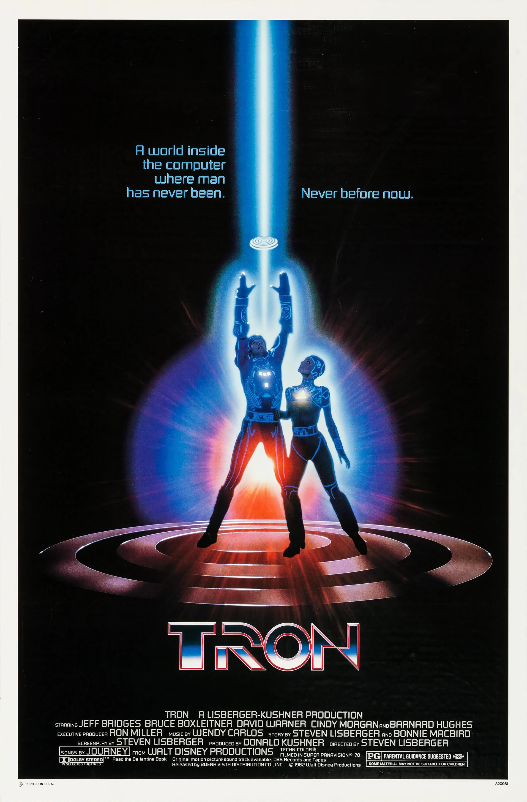
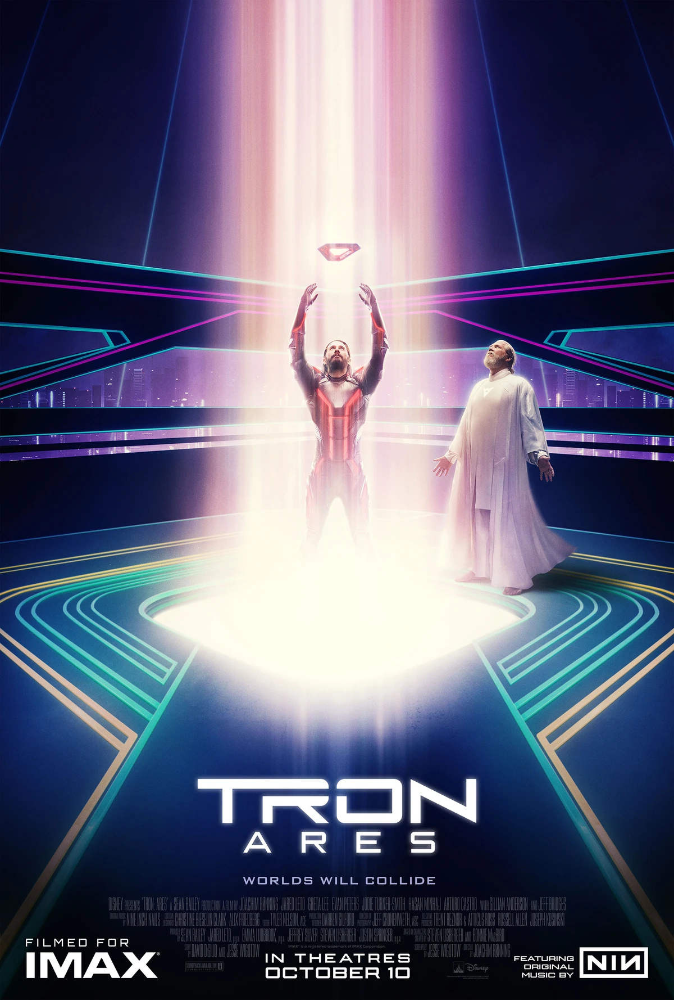

Tron (1982)
The original simulation. Computer hackerKevin Flynnis digitized into the ENCOM mainframe after trying to hack into their system to prove he created ENCOM's biggest game hits. He teams up with Game Grid warrior, Tron, and together they destory the MASTER CONTROL PROGRAM. Soon Flynn is released from the mainframe and regains the title as the creator of ENCOM's games.
System ID: Game Grid
RECOGNIZER PROTOCOL: ACTIVE

Tron: Legacy (2010)
After the events of Tron, Kevin Flynn goes missing and we focus on the journey of Sam Flynn, his son. We see him recieving a mysterious message from his father leading to his private computer in his arcade. Turning on the computer, Sam enters the The Grid, Flynn's private digital world. With the help of Quorra, the last ISO, and many others, they fight and defeat the brutal tyrant known as CLU, Flynn's personal program.
System ID: The Grid
The original ISOs were protected by Tron purged during the Purge.
CLU 2.0: CREATING THE PERFECT SYSTEM

Tron: Ares (2025)
Coming from the depth of Dillinger's Systems, Flynn's rival, comes out their most powerful program, Ares. A super intelligent program made to be transfered from the digital world to the real world. After his arrival to Earth, Ares becomes enlighten from life and starts to rebel his programming. With the help from new human friends and some old ones, Ares battles Dillinger's System and becomes organic.
Project Status: REDACTED MISSING
>
System ID: Dillinger
SIGNAL TRACED TO REAL-WORLD COORDINATES